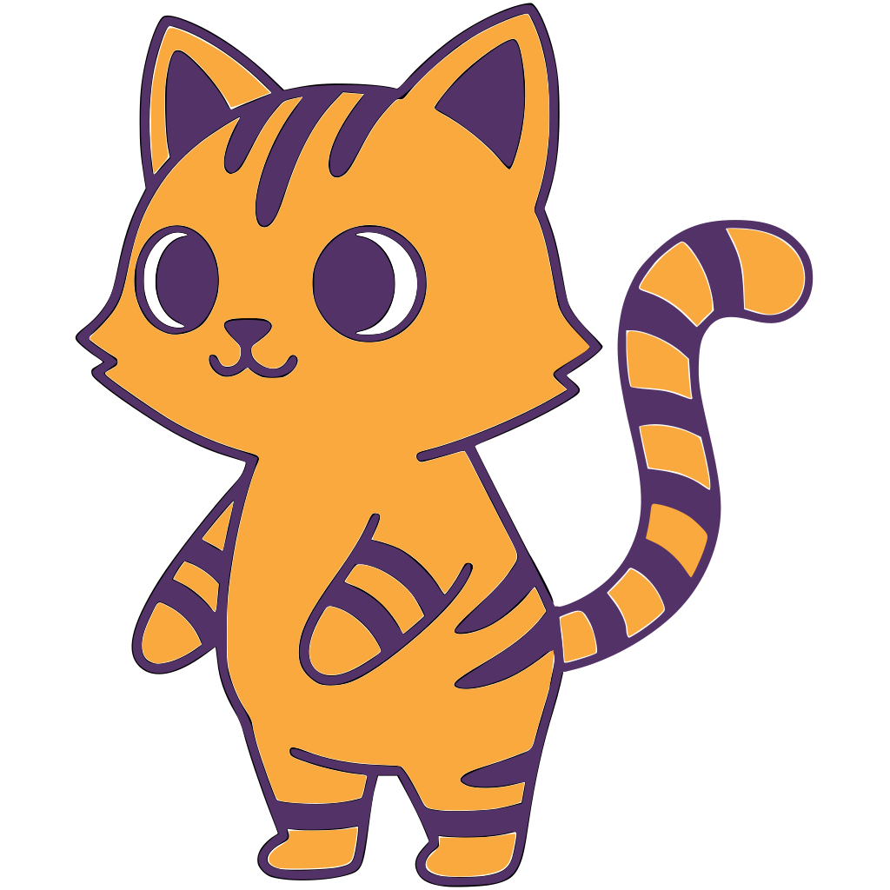

Буткемп ЦУСервис для поиска сокомандников и формирования команд среди студентов и школьников
студентов хотят участвовать в хакатонах и олимпиадах
НАФИ, 2024
не могут найти подходящих сокомандников с нужными навыками
НАФИ, 2024
Поиск команды отнимает время, нервы и возможности. Нет единого инструмента для поиска сокомандников по навыкам и бэкграунду
Студенты и школьники
Телеграм-бот и сервис для поиска сокомандников, формирования команд и объединения пользователей по образовательному и профессиональному треку с учётом направления, навыков и статуса. В перспективе — поиск мероприятий и стажировок.
Что строим в первую очередь
На старте главная ценность продукта — matchmaking пользователей, а не мероприятия и стажировки.
Когда я... я хочу... чтобы...
Когда я узнаю о хакатоне и хочу участвовать, я хочу быстро найти сокомандников с нужными навыками, чтобы собрать сильную команду и не тратить дни на поиск.
Когда я ищу людей для проекта, я хочу видеть их опыт, направление и олимпиадные достижения, чтобы принять осознанное решение.
Когда я только начинаю свой путь в IT, я хочу найти команду, готовую принять новичка, чтобы получить реальный опыт командной работы.
Крутой продукт + крутой маркетинг = рост
Почему нам нужен Центральный Университет
Доступ к сообществу ЦУ для тестирования продукта и привлечения первых пользователей
Доступ к экспертизе команды университета для развития продукта
Бренд ЦУ повышает доверие пользователей к платформе
Потенциальная поддержка в развитии продукта совместно с сообществом ЦУ и тестирование в кампусе
От MVP к полноценной платформе
Регистрация, профиль, выбор направления и статуса
Фильтры по направлению, навыкам, статусу. Режим «Ищу команду / Ищу людей»
Профили с достижениями, ссылками и дипломами
Полноценный веб-интерфейс с расширенным функционалом поиска
Масштабирование и новые фичи
Агрегация хакатонов, олимпиад и конкурсов с возможностью записи
Интеграция с площадками стажировок, фильтрация по направлению
Парсинг нескольких RSS-фидов для IT-студентов — вся информация в одном месте
Расширение на другие университеты, партнёрства и интеграции
Три экрана — весь путь пользователя
Имя, направление, статус, олимпиады — создание профиля за 2 минуты
Фильтры по навыкам, направлению и статусу — находи нужных людей
Переключи режим, найди тиммейтов и формируй команду мечты
Живой персонаж платформы
Узнаваемый персонаж, который сопровождает пользователя на всех этапах работы с сервисом
Не продукт внутри ЦУ, а самостоятельный сервис с возможной интеграцией в экосистему университета
Новаторский подход к решению проблем ЦА
Алгоритм подбора сокомандников по направлению, навыкам, олимпиадному опыту и статусу — не случайная выборка, а осмысленный подбор
Гибкая система категоризации: IT → Backend/Frontend/ML/Mobile, Спорт, Искусство + возможность добавить «Другое»
Телеграм-бот + веб-платформа: поиск команды, мероприятий, стажировок и RSS-лента IT-новостей — всё в одном месте